#1094: [WY] Backfill timeseries to reflect duplicate negative tests removed from the count by Wyoming
Issue number 1094
muamichali opened this issue on February 10, 2021, 4:33 PM PST
Labels Data quality not stale
State or US: Wyoming
Describe the problem On February 9, 2021, Wyoming’s Total PCR tests (specimens) fell from 704,836 to 595,970. We carried the previous day’s number as we believed this may have been an error and wanted to allow them time to correct it. On February 10, 2021, we learned that the decrease "Due to recent changes in reporting by commercial laboratories, some test results were being counted twice. Testing numbers have been corrected to reflect these changes therefore a decrease in the testing numbers will be observed for Non-WPHL labs. That decrease is attributed to the removal of duplicate tests being reported". As a result of this new information, we are backfilling our Total PCR tests (specimens) to reflect this new information and ensure that our data aligns as closely as possible with the states.
We should backfill Total Tests (PCR), Positive Tests (PCR) and Negative Tests (PCR)
Link to data source

Comments
This issue has been automatically marked as stale because it has not had recent activity. It will be closed if no further activity occurs. Thank you for your contributions!
This issue has been closed because it was stale for 15 days, and there was no further activity on it for 10 days. You can feel free to re-open it if the issue is important, and label it as "not stale."
This was already handled by https://github.com/COVID19Tracking/issues/issues/1093
#1094: [WY] Backfill timeseries to reflect duplicate negative tests removed from the count by Wyoming
Issue number 1094
muamichali opened this issue on February 10, 2021, 4:33 PM PST
Labels Data quality not stale
State or US: Wyoming
Describe the problem On February 9, 2021, Wyoming’s Total PCR tests (specimens) fell from 704,836 to 595,970. We carried the previous day’s number as we believed this may have been an error and wanted to allow them time to correct it. On February 10, 2021, we learned that the decrease "Due to recent changes in reporting by commercial laboratories, some test results were being counted twice. Testing numbers have been corrected to reflect these changes therefore a decrease in the testing numbers will be observed for Non-WPHL labs. That decrease is attributed to the removal of duplicate tests being reported". As a result of this new information, we are backfilling our Total PCR tests (specimens) to reflect this new information and ensure that our data aligns as closely as possible with the states.
We should backfill Total Tests (PCR), Positive Tests (PCR) and Negative Tests (PCR)
Link to data source
Comments
This issue has been automatically marked as stale because it has not had recent activity. It will be closed if no further activity occurs. Thank you for your contributions!
This issue has been automatically marked as stale because it has not had recent activity. It will be closed if no further activity occurs. Thank you for your contributions!
This issue has been closed because it was stale for 15 days, and there was no further activity on it for 10 days. You can feel free to re-open it if the issue is important, and label it as "not stale."
This was already handled by https://github.com/COVID19Tracking/issues/issues/1093
#1093: [WY] Patch 02/09/21 Total PCR tests (specimens)
Issue number 1093
hmhoffman opened this issue on February 10, 2021, 2:43 PM PST
State: WY
Dates affected: 02/09/21
Describe the issue: On February 9, 2021, Wyoming’s Total PCR tests (specimens) fell from 704,836 to 595,970. We carried the previous day’s number as we believed this may have been an error and wanted to allow them time to correct it. On February 10, 2021, we learned that the decrease "Due to recent changes in reporting by commercial laboratories, some test results were being counted twice. Testing numbers have been corrected to reflect these changes therefore a decrease in the testing numbers will be observed for Non-WPHL labs. That decrease is attributed to the removal of duplicate tests being reported". As a result of this new information, we are backfilling our Total PCR tests (specimens) to reflect this new information and ensure that our data aligns as closely as possible with the states.
Comments
Rows edited: 1 WY 2021-02-09 totalTestsViral: 595970 (was 704836)
#1093: [WY] Patch 02/09/21 Total PCR tests (specimens)
Issue number 1093
hmhoffman opened this issue on February 10, 2021, 2:43 PM PST
State: WY
Dates affected: 02/09/21
Describe the issue: On February 9, 2021, Wyoming’s Total PCR tests (specimens) fell from 704,836 to 595,970. We carried the previous day’s number as we believed this may have been an error and wanted to allow them time to correct it. On February 10, 2021, we learned that the decrease "Due to recent changes in reporting by commercial laboratories, some test results were being counted twice. Testing numbers have been corrected to reflect these changes therefore a decrease in the testing numbers will be observed for Non-WPHL labs. That decrease is attributed to the removal of duplicate tests being reported". As a result of this new information, we are backfilling our Total PCR tests (specimens) to reflect this new information and ensure that our data aligns as closely as possible with the states.
Comments
Rows edited: 1 WY 2021-02-09 totalTestsViral: 595970 (was 704836)
#1066: [WY] Correcting Cumulative hospitalization value for 1/12/2021-1/13/2021
Issue number 1066
jaclyde opened this issue on January 14, 2021, 12:06 PM PST
Labels Data quality
State: Wyoming
Issue: Wyoming only reports the number of people Ever hospitalized with COVID-19 as a percentage of “Lab Confirmed Cases by Reported Hospitalization,” in the absence of a better data source we convert this percentage to an integer. On 1/12 and 1/13 part of the calculation was entered incorrectly, as .29 rather than .029, causing the appearance of a big spike in hospitalization. Correcting the calculation and values.
Comments
Values corrected: Changes (2).txt
#1066: [WY] Correcting Cumulative hospitalization value for 1/12/2021-1/13/2021
Issue number 1066
jaclyde opened this issue on January 14, 2021, 12:06 PM PST
Labels Data quality
State: Wyoming
Issue: Wyoming only reports the number of people Ever hospitalized with COVID-19 as a percentage of “Lab Confirmed Cases by Reported Hospitalization,” in the absence of a better data source we convert this percentage to an integer. On 1/12 and 1/13 part of the calculation was entered incorrectly, as .29 rather than .029, causing the appearance of a big spike in hospitalization. Correcting the calculation and values.
Comments
Values corrected: Changes (2).txt
#975: [WY] Backfill time-series in specimens units
Issue number 975
muamichali opened this issue on November 25, 2020, 4:11 PM PST
Labels Data quality
State or US: Wyoming
Describe the problem There is a time-series of positive & negative tests on the state and county page that sums up to the tests number on the
Link to data source Provide links to original data sources that we can refer to, like a state COVID website.
Comments
The data taken from County Dashboard page, the chart "Laboratory Results by Date"
#951: [WY] Patch 11/13 cur. hosp
Issue number 951
hmhoffman opened this issue on November 16, 2020, 6:47 AM PST
State: WY
Dates affected: 11/13
Describe the issue: On 11/13, we missed the update for WY cur. hosp. We should patch this update.
Comments
BEFORE: 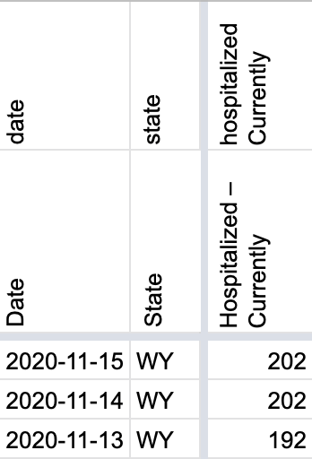
AFTER:
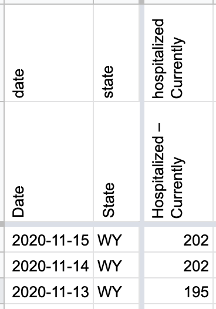#851: [WY]Timestamp was entered as 9/16 instead of 9/17
Issue number 851
muamichali opened this issue on September 18, 2020, 2:40 PM PDT
Labels Data quality
State or US: Wyoming
Describe the problem On 9/17 the timestamp was entered as 9/16 by mistake

Comments
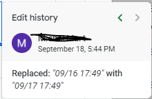
#739: [WY] Probables Backfill
Issue number 739
jesseandersonumd opened this issue on August 6, 2020, 6:23 AM PDT
Labels stale
State: WY
Dates impacted: 4/29 - 7/27
Issue description: We started reporting probable cases on 7/28. The states probables can be calculated from total cases - confirmed cases. We can backfill these values back to 4/29.
Source: https://health.wyo.gov/publichealth/infectious-disease-epidemiology-unit/disease/novel-coronavirus/
Comments
BEFORE: 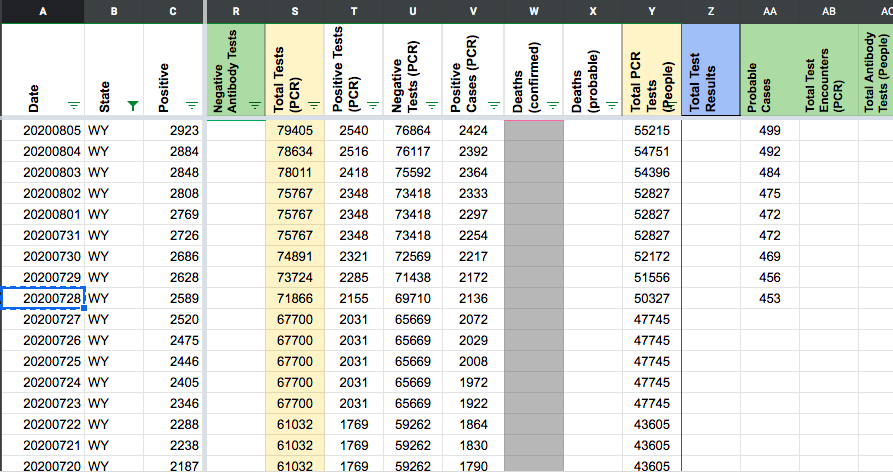
AFTER: 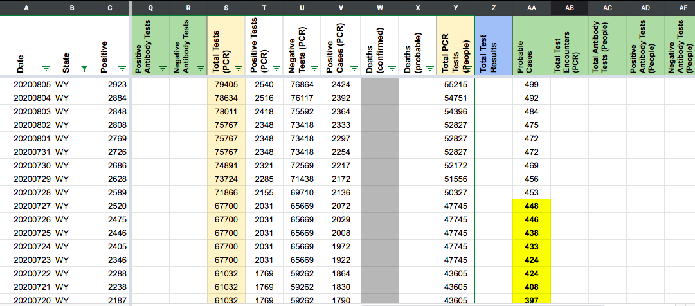
This issue has been automatically marked as stale because it has not had recent activity. It will be closed if no further activity occurs. Thank you for your contributions!
This issue has been closed because it was stale for 15 days, and there was no further activity on it for 10 days. You can feel free to re-open it if the issue is important, and label it as "not stale."
We found some discrepancies in Positive Cases (PCR) and Probables. We also found Probables that were not filled out prior to May. The plan is as follows:
-
Backfill Positive Cases (PCR) for all dates 4/8 - 5/13 due to being a day off or having some small discrepancies.
-
Fix Positives Cases (PCR) for 5/16, 5/18, 5/19, 5/21, 5/24, 5/25 due to discrepancies and duplicates.
-
Backfill probables from 4/8 - 4/30 for dates we did not collect.
-
Fix probables for 5/1 - 5/4, 5/8, 5/9, 5/11, 5/13, 5/16, 5/18, 5/19, 5/21, 5/24, 5/25, 5/27, 6/2, 6/15, 6/24, 7/6, 7/13
-
Fix prob+confirm for entire time series due to being off by a day and not having probables.
This issue has been automatically marked as stale because it has not had recent activity. It will be closed if no further activity occurs. Thank you for your contributions!
This issue has been closed because it was stale for 15 days, and there was no further activity on it for 10 days. You can feel free to re-open it if the issue is important, and label it as "not stale."
#651: [WY] Backfilling 7/17-19 data after release
Issue number 651
brianskli opened this issue on July 20, 2020, 2:14 PM PDT
Labels Backfill Historical Data
Wyoming did not report data for several days due to new HHS regulations. On 7/20, the missing data points were released.
https://sites.google.com/wyo.gov/exec-covid19/hospital-resources
Comments
Data was obtained for this graph: 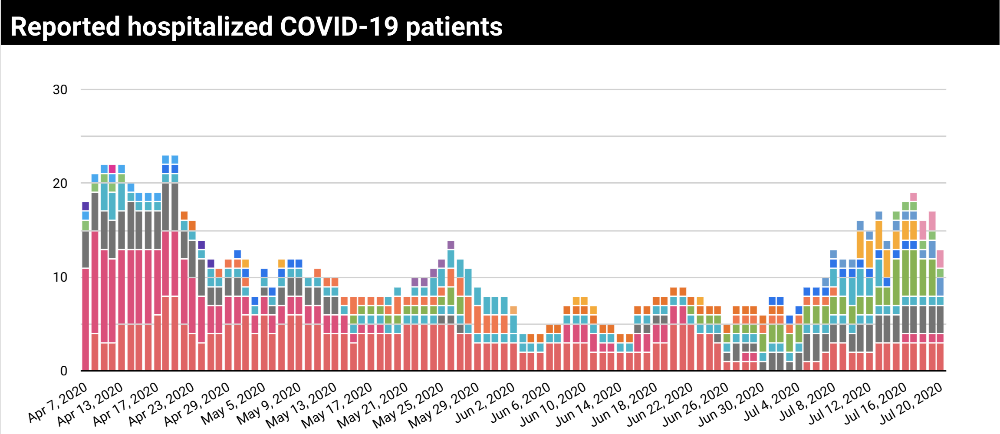
Corresponding data points (which were carried over during the period of missing data) were replaced in States Daily.
Before: 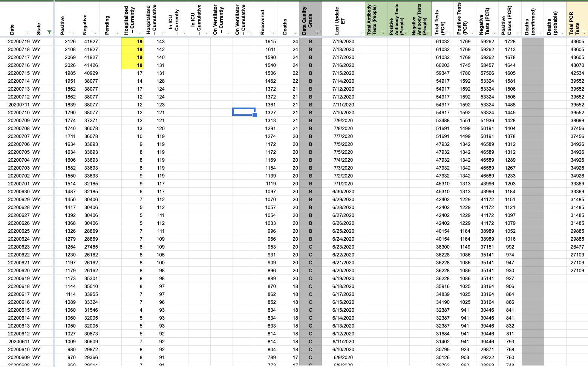
After: 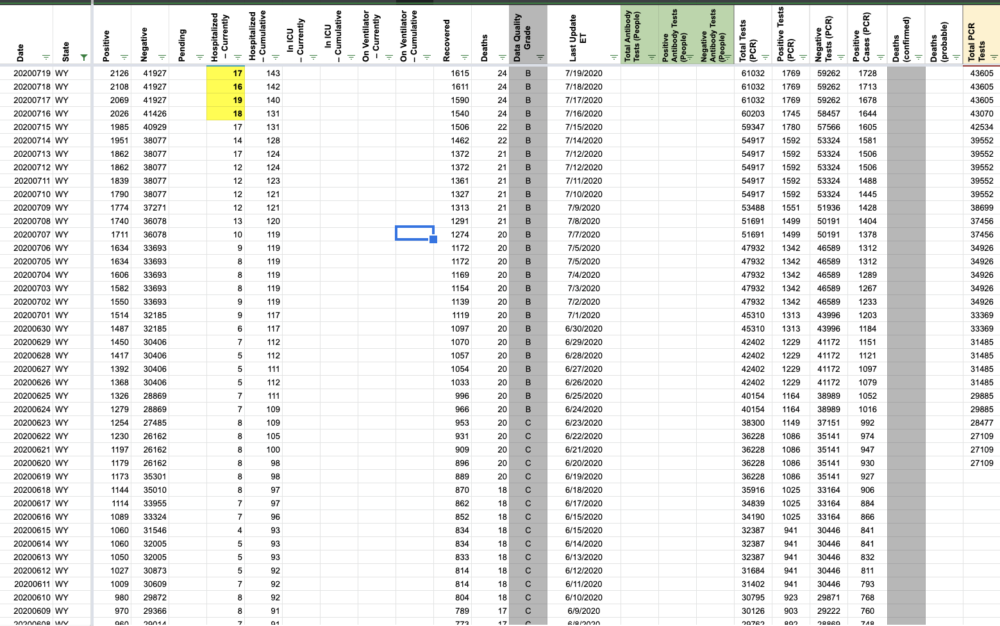
#647: [WY] 7/17 Testing Data
Issue number 647
brianskli opened this issue on July 18, 2020, 1:49 PM PDT
Transposition error on 7/17 total tests performed, creating issues for test counts
Comments
Testing Data page (tertiary screenshot) was used: 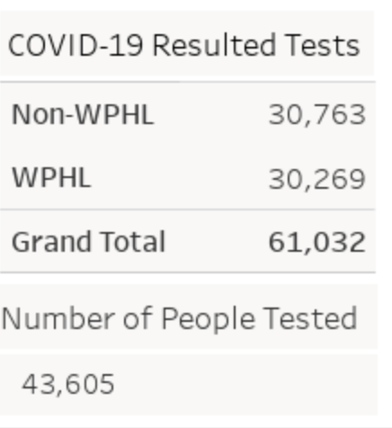
The following data was changed (all on 7/17):
Total Tests (PCR): 61302 to 61032
Positive Tests (PCR): =floor(61302*0.029,1)=1777 to =floor(61032*0.029,1)=1769
Negative Tests (PCR): =floor(61302*0.971,1)=59524 to =floor(61032*0.971,1)=59262
Before: 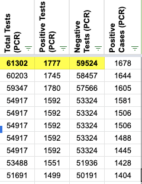 After: 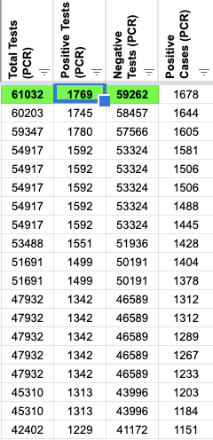
#609: [Correction] WY Total Tests People was entered incorrectly on 7/10
Issue number 609
qpmnguyen opened this issue on July 13, 2020, 6:27 AM PDT
Labels Data quality
State or US: WY
Describe the problem
On 7/10, there was an entry mistake for Total Tests (People). The number should have been 39552 instead of 39522.
Screenshot on 7/10 ~22:00 EST

Link to data source https://covid-tracking-project-data.s3.us-east-1.amazonaws.com/state_screenshots/WY/WY-tertiary-20200710-183049.png
Comments
BEFORE: 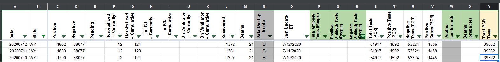 AFTER: 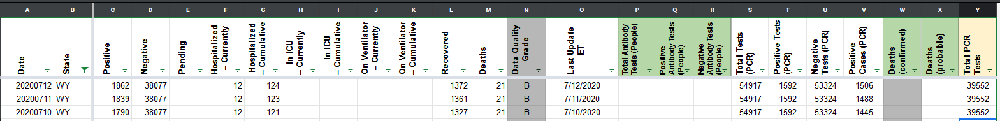
#595: [WY] PCL Cases Historicals
Issue number 595
the-daniel-lin opened this issue on July 10, 2020, 7:31 AM PDT
Labels Backfill Missing Data PCL/SVP Historicals not stale
State or US: Wyoming
Describe the problem CTP Positive Cases (PCR) goes back until 4/29. There's also a gap for Positive and Negative Tests (PCR) from 5/5 - 5/14. WY provides hover-over graphs for lab-confirmed cases (line graph - people) until 3/12 and tests (bar graph - specimens) back until 3/4.
Link to data source Lab-Confirmed Cases: https://health.wyo.gov/publichealth/infectious-disease-epidemiology-unit/disease/novel-coronavirus/covid-19-map-and-statistics/
COVID-19 Resulted Tests by Collection Date: https://health.wyo.gov/publichealth/infectious-disease-epidemiology-unit/disease/novel-coronavirus/covid-19-testing-data/
Comments
Data backfilled using https://health.wyo.gov/publichealth/infectious-disease-epidemiology-unit/disease/novel-coronavirus/covid-19-map-and-statistics/ Data recorded on graph on a day will be recorded in sheet as the subsequent day
BACKFILLED (BEFORE) 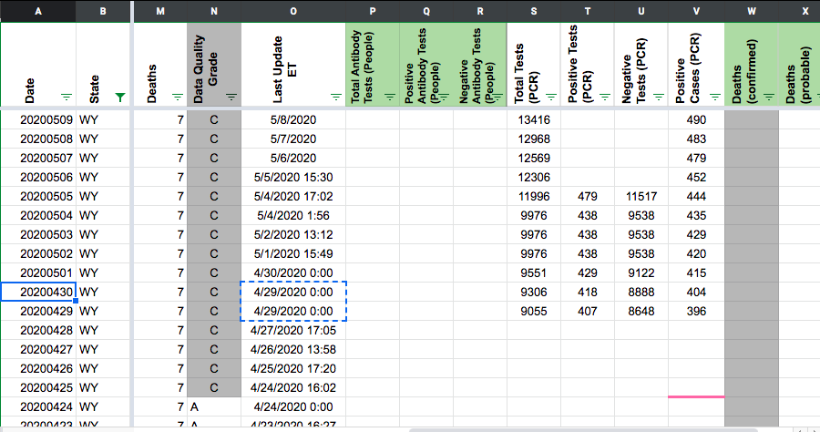
BACKFILLED (AFTER) BACK TO 3/12 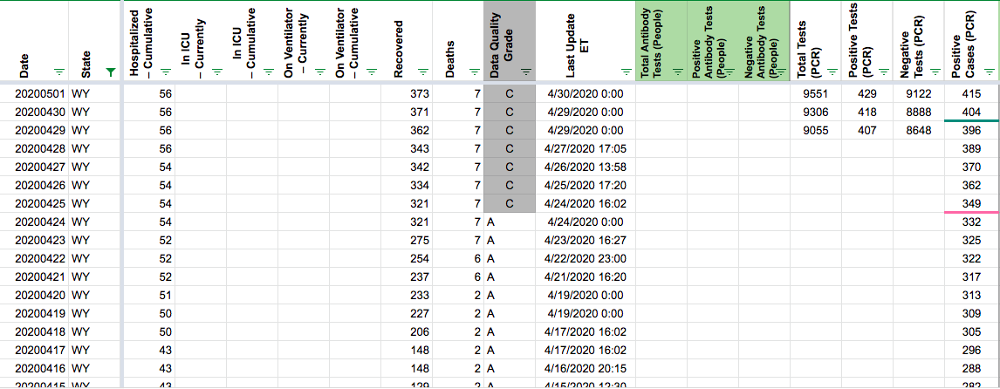
I am seeing some slight discrepancies. Need to look at this again. Might be shifted by one day.
Note for backfill team - we've backfilled the confirmed cases (PCR) but have yet to adjust for negatives. Please adjust negatives and review the graph "Lab Confirmed Cases by Date of Report, Total Number of Recovered Lab Confirmed Cases; and Percent of Cases with Community Spread or Unknown Exposure" located at: https://health.wyo.gov/publichealth/infectious-disease-epidemiology-unit/disease/novel-coronavirus/covid-19-map-and-statistics/
This issue has been automatically marked as stale because it has not had recent activity. It will be closed if no further activity occurs. Thank you for your contributions!
We're handling this in #739
#530: [WY] PCL Historicals and WS2
Issue number 530
pscsharon opened this issue on June 25, 2020, 7:44 AM PDT
Labels PCL/SVP Historicals
Death values are historically recorded in both the "Deaths" and "Deaths (Confirmed)" columns for WY. However, WY's death values represent lumped probable and confirmed figures, so they should only be recorded in the main "Deaths" field.
Comments
Added note in Worksheet 2
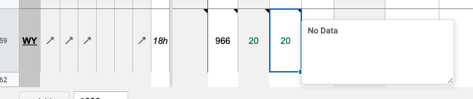
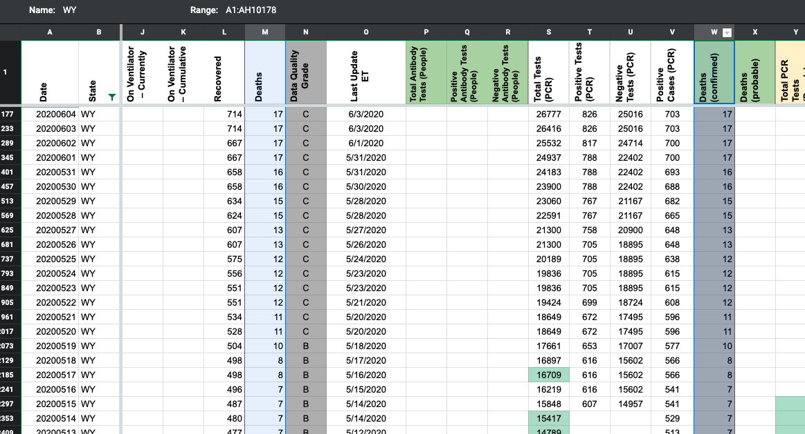
Confirmed the data matched "Deaths", then removed "Deaths (Confirmed)" between yesterday and 5/12 (today's cell was blank).
Updated WY's source note for Deaths (confirmed) to Not Provided. KWS already wrote a private note about this.
DC'ed by JJA 6/26 9:48:00 a.m. ET
#507: WY began reporting People tested, which made negatives go down
Issue number 507
amandafrench opened this issue on June 21, 2020, 3:06 PM PDT
Labels Data quality
State or US: [State name, or "US" if this is an issue with country-wide data] Wyoming
Describe the problem On 6/19 Wyoming began reporting how many people have been tested for COVID; previously they had only been reporting specimens. Today (6/21) we incorporated the new data into our calculations, which made our "Negatives" number decrease. Might need to fix historicals for 6/20 and perhaps 6/19.
Link to data source https://health.wyo.gov/publichealth/infectious-disease-epidemiology-unit/disease/novel-coronavirus/covid-19-testing-data/
https://covidtracking.com/data/state/wyoming
Comments
Complicating factors:
- We don't actually have the value for 6/19. We didn't get screenshots of the relevant page until 6/21. Data entry didn't record it until 6/20.
- The value for Total PCR Tests (People) hasn't changed yet since it was first recorded, even though positive cases (PCR) has been rising.
Under these circumstances, I think we should leave the 6/19 number as-is. I'm editing the Negatives number for 6/20 to move the big decrease back a day. To avoid a needless tiny drop in negatives, I have to use the same number as from 6/21 (since the positives increased slightly day to day but the total tests number hasn't been updated by the state).
Before: 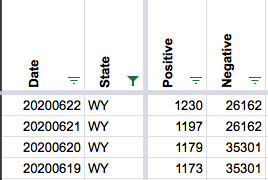
After: 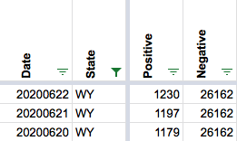
I also updated the public note to say we took the change starting on 6/20 instead of 6/21.
#337: WY data for 4/29 includes probable cases, while it didn't before
Issue number 337
thejinghao opened this issue on April 30, 2020, 7:12 AM PDT
Comments
@jinghao1994 Thank you for writing about this.
The CDC has issued a guidance on 4/14 that case counts and death counts include confirmed and probable cases There is more information about the definitions of confirmed and suspected here
We are going to standardize this guideline across all the states that report both numbers. We are also tracking the number of confirmed cases and deaths and we will enahnce our reporting to expose those numbers on the website.
This issue has been automatically marked as stale because it has not had recent activity. It will be closed if no further activity occurs. Thank you for your contributions!